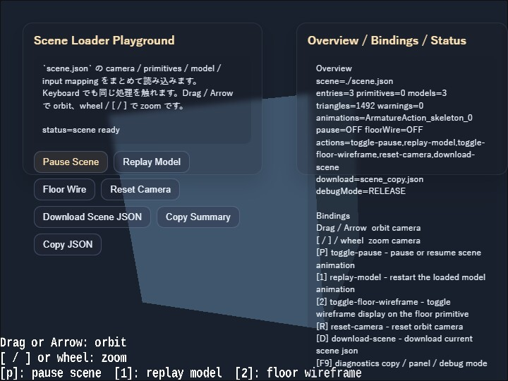

scene
English | 日本語

Overview
- This sample loads a Scene JSON file with
SceneAsset.load()and displays it as-is by passing it throughWebgApp.validateScene()andWebgApp.loadScene() - Camera, primitives, models, HUD, and input mapping are collected inside a single scene definition, while the JavaScript side implements only the action handlers
- An
OverlayPanel-based DOM UI is also layered on top of the screen so Scene JSON actions can be triggered from buttons as well. This makes it easier to compare the connection between the scene-side input definitions and the JavaScript-side handlers
How to Run
- Open ./scene.html
- Use a browser with WebGPU support, and check the help panel and HUD together with the sample when needed
webg Features Used
WebgApp: standard initialization, render loop, and Scene JSON loadingSceneAsset.load: loads the Scene JSON fileWebgApp.validateScene: validates the Scene JSONWebgApp.loadScene: places the scene into the current appSceneLoader: restores camera / HUD / primitives / models / input mappingSceneValidator: schema validation with path informationModelAsset: intermediate representation for models inside the sceneModelBuilder: converts models / primitives in the scene into runtime shape groupsEyeRig(type="orbit"): viewpoint control for looking around the entire sceneMessage: displayshud.guideLines / hud.statusLinesfrom the Scene JSON as the HUD
Checkpoints
- Confirm that the validator passes for
scene.jsonand that camera, HUD, primitives, models, and input can all be loaded together - Confirm that
hud.guideLines / hud.statusLinesinscene.jsonare explicitly described as objects withx / y / text / colorfor each row - Confirm that the floor primitive and marker primitive are displayed and that primitive definitions can be placed through
SceneLoader - Confirm that the model loaded from
../json_loader/modelasset.jsonappears in the same scene, showing that the existingModelAssetpath can also be reused from the scene side - Confirm that the action buttons in the left
OverlayPanelcan runpause / replay / floor wire / reset / download, and that they invoke the same processing flow as the keyboard shortcuts - Confirm that the
p, 1, 2, r, dactions reach the JavaScript-side handlers throughsceneRuntime.createInputHandler(), showing that the Scene JSON input mapping is used as metadata - Confirm that
ptoggles pause / resume for all animations of the model inside the scene - Confirm that
1restarts the model animation from the beginning - Confirm that
2toggles the floor primitive wireframe display - Confirm that
rreturns the orbit camera to the initial angles and distance defined by the scene - Confirm that
dcan download the current Scene JSON again, serving as a minimal entry point for scene export - Confirm that the right
OverlayPanelshows the scene file, entry count, primitive count, model count, action names, and validator warning count, making the load state of the Scene JSON visible on screen
Controls
- Drag / arrow keys: orbit camera rotation
- Mouse wheel /
[ / ]: zoom - Upper-left buttons:
Pause Scene,Replay Model,Floor Wire,Reset Camera,Download Scene JSON P: pause / resume scene animation1: restart the model animation2: toggle floor wireframeR: return the camera to its initial positionD: download the current Scene JSON